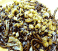
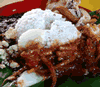
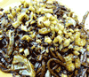
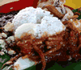

Cuisines in Malaysia
Malaysia cuisine consists of cooking traditions and practices found in Malaysia, and reflects the
multiethnic makeup of its population. The vast majority of Malaysia’s population can roughly be divided
among three major ethnic groups: Malays, Chinese and Indians. The mainstay of every Malaysian meal is
rice. At each meal, a generous helping accompanies a selection of dishes, including fish, seafood,
vegetables, and poultry.
Here are some examples of Malaysian cuisines:
 



From left to right, Ba Ku Teh, Banana Leaf Rice, Hokkien Mee, Nasi Lemak, Satay
Ba Ku Teh
Bakuteh literally translates as ‘meat bone tea’, and its consiste of fatty pork ribs simmered in a broth of herbs and spices including staranise, cinnamon, cloves, dong guai, fennel seeds and garlic for as long as possibles. Additional ingredients may include offal, varieties of mushroom, vegetables and pieces of tofu puffs.
Banana Leaf Rice
Banana Leaf Rice is one of the great south Indian cuisines in Malaysia. In banana leaf rice, white rice is served on a banana leaf with an assortment of vegerables, curried meat or fish, pickles, and the super addictive giant, round, flat crisps. Most of the time, however, only the gravy of the curry will be served and no meat is served as it is meant to be a traditional Indian vegetarian dish. This meal is traditionally eaten with the hand.
Hokkien Mee
Hokkien Mee is a chinese style fried yellow noodles. It is a dish of thick yellow noodles braised in thick dark soy sauce with pork, squid, fish-cake and cabbage as the main ingredients and cubes of crispy fried pork lard as garnishing.
Nasi Lemak
Nasi Lemak literally translate as ‘rice in cream’ which is derived from the cooking process where regular white rice is soaked in coconut cream and then steamed to give a gorgeous, aroma of coconut-perfumed white rice. The white rice is then wrapped in banana leaf or served on a plate. The rice served with hot spicy sauce, hord boiled egg, cucumber slices, small dried anchovies and roasted peanuts. This is a popular breakfast dish in Malaysia.
Satay
Satays are meats on sticks over a BBQ. The popular kinds of stays are usually beef and chicken satay. The bite-sized pieces of beef, mutton or chicken are marinated in spices, then skewered through thin bamboo strips, are barbequed over charcoal fire. Satay is served with rice cake and a raw salad of cucumber and onions. Sweet, spicy peanut sauce accompanies the dish.